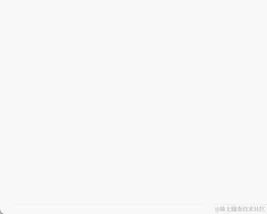

2024-06-08 13:45:10 · YinHao
实现标红就需要给文字加上 html 标签和样式，但是输入框会将 html 都转为字符串，既然输入框无法实现，那么我们换一种思路，通过 div 代替输入框来显示输入的文本，那我们是不是就可以实现文本标红了？
<div class="main">
<div id="shadowInput" class="highlight-shadow-input"></div>
<textarea
id="textarea"
cols="30"
rows="10"
class="highlight-input"
></textarea>
</div>
.main {
position: relative;
}
.highlight-shadow-input {
position: absolute;
top: 0;
left: 0;
height: 100%;
width: 100%;
padding: 8px;
border: 1px;
box-sizing: border-box;
font-size: 12px;
font-family: monospace;
overflow-y: auto;
word-break: break-all;
white-space: pre-wrap;
}
.highlight-input {
position: relative;
width: 100%;
padding: 8px;
box-sizing: border-box;
font-size: 12px;
background: rgba(0, 0, 0, 0);
-webkit-text-fill-color: transparent;
z-index: 999;
word-break: break-all;
}
实现这个功能的精髓就在于将输入框的背景和输入的文字设置为透明，然后将其层级设置在 div 之上，这样用户既可以在输入框中输入，而输入的文字又不会展示出来，然后将输入的文本处理后渲染到 div 上。
const textarea = document.getElementById("textarea");
const shadowInput = document.getElementById("shadowInput");
const sensitive = ["敏感词", "禁用词"];
textarea.oninput = (e) => {
let value = e.target.value;
sensitive.forEach((word) => {
value = value
.replaceAll(word, `<span style="color:#e52e2e">${word}</span>`)
.replaceAll("\n", "<br>");
});
shadowInput.innerHTML = value;
};
监听输入框 oninput 事件，用 replaceAll 匹配到敏感词并转为 html 后渲染到 shadowInput 上。此外，我们还需要对输入框的滚动进行监听，因为 shadowInput 是固定高度的，如果用户输入的文本出现滚动条，则需要让 shadowInput 也滚动到对应的位置
<div>
<div id="shadowInput" class="highlight-shadow-input"></div>
</div>
textarea.onscroll = (e) => {
shadowInput.scrollTop = e.target.scrollTop;
};
// 此处输入时也需要同步是因为输入触底换行时，div的高度不会自动滚动
textarea.onkeydown = (e) => {
shadowInput.scrollTop = e.target.scrollTop;
};
